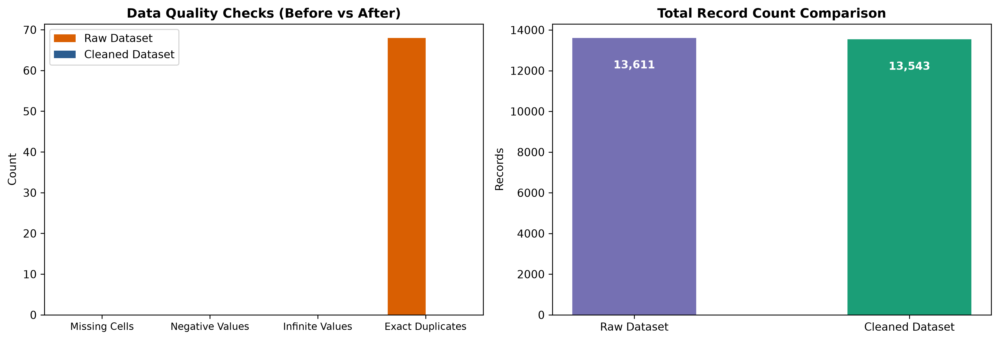
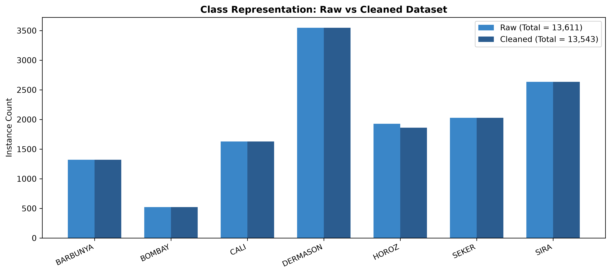

Phase 3 Technical Summary
The raw dataset was verified and audited. Exactly 0 missing values were detected. A total of 68 exact duplicate records (0.50%) were identified and removed in the working dataset to eliminate data leakage. All 16 morphological features were validated as positive finite numbers.
| Metric | Value |
|---|---|
| Original Observations | 13611 |
| Original Features | 16 |
| Missing Cells Count | 0 |
| Exact Duplicate Rows | 68 |
| Duplicates Removed | 68 |
| Cleaned Observations | 13543 |
| Final Features Count | 16 |
| Schema Validation Status | PASS (All constraints satisfied) |

Removing 68 duplicate rows reduced total observations from 13,611 to 13,543. Class distribution proportions remained virtually identical, preserving cultivar balance.
| Class | Raw Count | Cleaned Count | Duplicates Removed | Raw Pct | Cleaned Pct |
|---|---|---|---|---|---|
| BARBUNYA | 1322 | 1322 | 0 | 9.71 | 9.76 |
| BOMBAY | 522 | 522 | 0 | 3.84 | 3.85 |
| CALI | 1630 | 1630 | 0 | 11.98 | 12.04 |
| DERMASON | 3546 | 3546 | 0 | 26.05 | 26.18 |
| HOROZ | 1928 | 1860 | 68 | 14.17 | 13.73 |
| SEKER | 2027 | 2027 | 0 | 14.89 | 14.97 |
| SIRA | 2636 | 2636 | 0 | 19.37 | 19.46 |

Statistical outliers in physical scale dimensions (Area, Perimeter, ConvexArea, MinorAxisLength) reflect genuine biological characteristics of larger seed cultivars (such as Bombay) rather than sensor or transcription errors. In accordance with machine learning best practices, no observations were discarded or truncated. Robust scaling and tree-based ensembles will be utilized in subsequent modeling stages.
| Feature Category | Statistical Outliers Observed | Treatment Decision | Scientific Justification |
|---|---|---|---|
| Dimensional Scale (Area, Perimeter, ConvexArea, EquivDiameter) | High (Area: 577 IQR outliers, ConvexArea: 565) | Retain biological extremes without truncation | Corresponds to legitimately large Bombay variety; truncation would discard true cultivar identity |
| Axis Dimensions (MajorAxisLength, MinorAxisLength) | Moderate (MinorAxisLength: 491, MajorAxisLength: 174) | Retain biological extremes without truncation | Reflects natural seed length and width variations across commercial bean cultivars |
| Boundary Ratios (AspectRation, Eccentricity, Solidity, roundness) | Low to Moderate (AspectRation: 355, roundness: 235) | Retain biological extremes without truncation | Reflects natural variation in seed circularity and elongation |
| Morphological Shape Factors (ShapeFactor1 through ShapeFactor4) | Moderate (ShapeFactor2: 382, ShapeFactor1: 89) | Retain biological extremes without truncation | Key discriminative shape factors; capping would damage model decision boundaries |
The cleaned dataset has been serialized to dataset/processed/cleaned_dry_beans.csv.
The data is verified, schema-consistent, and ready for feature engineering in Phase 4.